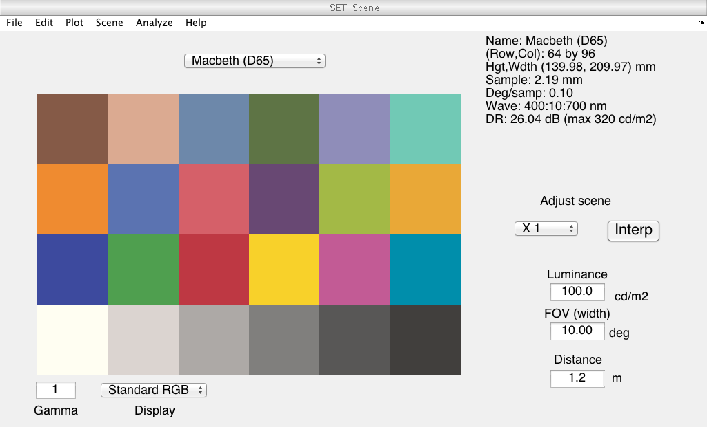
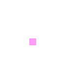
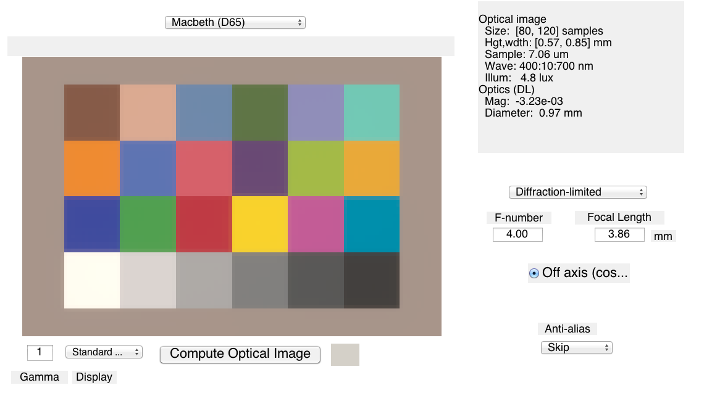
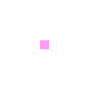
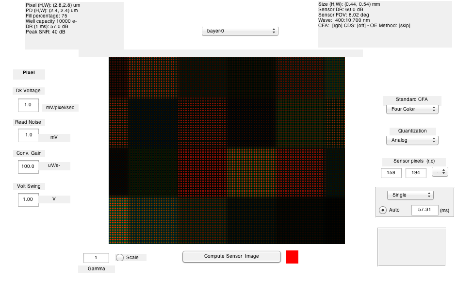
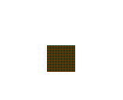

Contents
function t_codeROI(varargin)
t_codeROI
How to retrieve data from a region of interest in isetbio.
You can do this from the scene, oi, or sensor.
ISET has a few routines that manage simple, rectangular ROIs.
Copyright Imageval Consulting, LLC, 2013
if nargin == 0 interactiveUserInputIsON = false; else interactiveUserInputIsON = varargin{1}; end
Initialize
s_initISET
Build a test scene
scene = sceneCreate; vcAddAndSelectObject(scene); sceneWindow;
Select a region using the mouse
The format of a rect is [colmin,rowmin,width,height]
if (interactiveUserInputIsON) [roiLocs,rect] = vcROISelect(scene); else rect = [66 34 13 13]; roiLocs = ieRoi2Locs(rect); end % If you know the rect, and want to recover the roiLocs, use this % roiLocs2 = ieRoi2Locs(rect); % isequal(roiLocs,roiLocs2)
Get data from the object
The data are returned in XW Format. In this case, every row is the SPD of some point
roiData = vcGetROIData(scene,roiLocs,'photons'); % To convert the roiData back to a little square region run spd = XW2RGBFormat(roiData,rect(4)+1,rect(3)+1); vcNewGraphWin; imageSPD(spd,sceneGet(scene,'wave'));
The same method can be used with an OI
oi = oiCreate; oi = oiCompute(oi,scene); vcAddAndSelectObject(oi); oiWindow; if (interactiveUserInputIsON) [roiLocs,rect] = vcROISelect(oi); else rect = [78 43 12 12]; roiLocs = ieRoi2Locs(rect); end roiData = vcGetROIData(oi,roiLocs,'photons'); spd = XW2RGBFormat(roiData,rect(4)+1,rect(3)+1); vcNewGraphWin; imageSPD(spd,sceneGet(scene,'wave')); 
With a sensor, the data are different.
sensor = sensorCreate; sensor = sensorSetSizeToFOV(sensor,8); sensor = sensorCompute(sensor,oi); vcAddAndSelectObject(sensor); sensorWindow; if (interactiveUserInputIsON) [roiLocs,rect] = vcROISelect(sensor); else rect = [ 101 84 35 33]; roiLocs = ieRoi2Locs(rect); end % The sensor roiData has NaNs at all the positions where the sensor is % missing. Matlab handles plotting these data, even so roiData = vcGetROIData(sensor,roiLocs,'electrons'); electrons = XW2RGBFormat(roiData,rect(4)+1,rect(3)+1); vcNewGraphWin; imagescRGB(electrons);
Fov estimated using focal length = 0.003863 m 